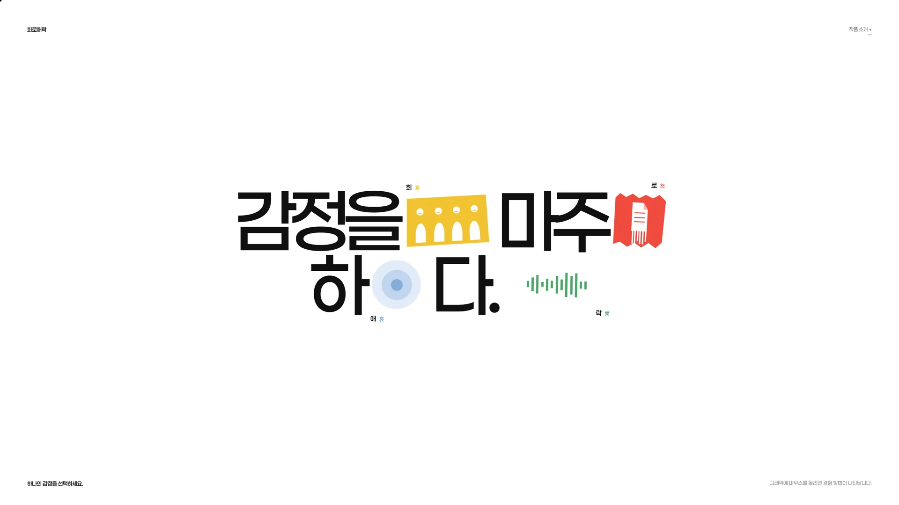
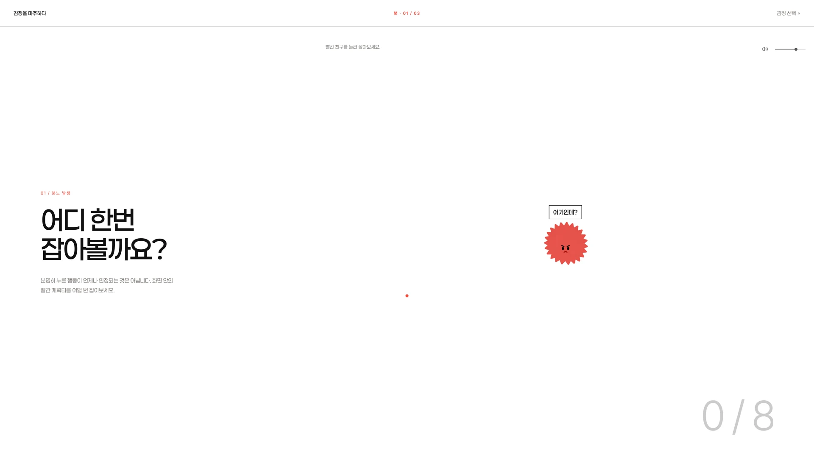
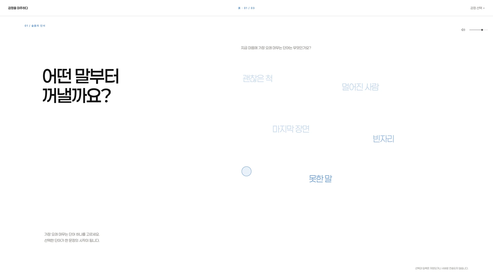
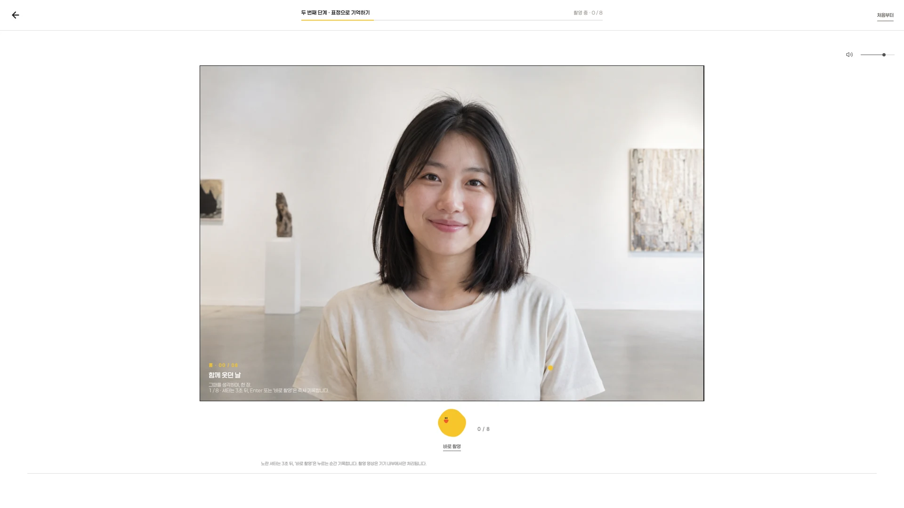
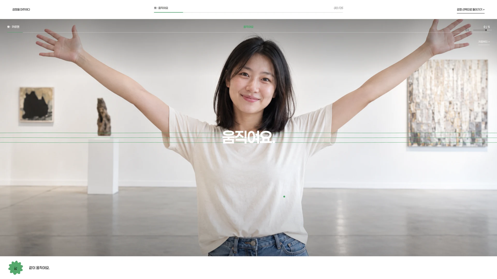

01 / INTERACTIVE WEB EXPERIENCE
감정을
마주하다.
기쁨, 분노, 슬픔, 즐거움.
네 가지 감정을 직접 움직이고
자신만의 흔적으로 남기는 인터랙티브 웹.
01 / THE IDEA
감정은 사라지는 대신,
움직임을 거쳐 남습니다.
제가 기쁨을 기록하고, 분노를 밖으로 꺼내고, 슬픔 속에서 호흡을 고르고, 음악에 몸을 맡기는 방식에서 출발했습니다. 감정을 설명하거나 평가하기보다 관람객이 직접 행동하며 자신만의 감정을 마주하도록 구성했습니다.
원본 웹사이트 보기 새 탭에서 열림
02 / FOUR WAYS TO FEEL
네 가지 감정,
네 가지 변환 방식.
각 감정에 맞춰 입력과 반응, 남는 결과를 다르게 설계했습니다. 아래에서 감정을 선택하면 실제 화면과 체험 영상을 볼 수 있습니다.
JOY / 기쁨
기쁨을 포착하다.
기쁨에 짧은 이름을 붙이고 여덟 장을 촬영합니다. 그중 네 장을 골라 꾸미고, 네 컷 사진과 GIF로 남깁니다. 순간의 표정이 눈에 보이는 기록으로 이어집니다.
- INPUT
- 문구 · 카메라 · 표정
- OUTPUT
- 네 컷 · GIF · QR · 인쇄
ACTUAL DEMO / 재생 버튼을 누르면 희의 체험 흐름을 볼 수 있습니다.
ANGER / 분노
분노를 통과하다.
달아나는 캐릭터를 붙잡고 마음에 걸린 말을 입력합니다. 꺼낸 말은 하나의 파일이 되고, 파쇄되는 움직임으로 바뀝니다. 붙잡기와 놓아주기를 행동으로 경험합니다.
- INPUT
- 마우스 · 키보드 · 문장
- OUTPUT
- 파일 · 파편 · 정적

SCREEN CAPTURE / 달아나는 캐릭터를 붙잡는 분노 인터랙션.
SORROW / 슬픔
슬픔 곁에 머물다.
마음에 머무는 문장을 꺼내 잠시 바라봅니다. 캐릭터와 네 번의 호흡을 함께하며 문장이 천천히 흘러가도록 구성했습니다. 빠른 해소 대신 머무를 수 있는 시간을 만듭니다.
- INPUT
- 문장 · 호흡
- OUTPUT
- 번짐 · 잔상 · 여백

SCREEN CAPTURE / 문장을 선택하고, 호흡하며 천천히 흘려보내는 경험.
PLEASURE / 즐거움
즐거움을 증폭하다.
음악을 고르고 리듬에 맞춰 몸을 움직입니다. 음악이 멈추는 다섯 순간의 자세를 카메라에 남깁니다. 몸짓과 음악이 만나 즐거움이 사진으로 기록됩니다.
- INPUT
- 음악 · 웹캠 · 몸짓
- OUTPUT
- 움직임 · 포즈 사진
ACTUAL DEMO / 음악과 카메라를 활용한 락 체험 영상.
03 / EXPERIENCE SYSTEM
서로 다른 감정을
하나의 흐름으로.
색과 캐릭터는 감정을 구분하고, 일정한 경험 구조는 낯선 인터랙션에 진입하도록 돕습니다. 네 감정 모두 ‘호출 → 변환 → 흔적’의 흐름으로 이어집니다.
감정 호출
짧은 질문과 문장을 통해 지금 나와 가까운 감정을 떠올립니다.
감정 변환
촬영, 붙잡기, 파쇄, 호흡, 몸짓. 감정마다 다른 행동으로 경험을 전환합니다.
흔적 생성
사진과 GIF, 파편과 잔상처럼 서로 다른 결과를 바라보며 경험을 마무리합니다.
04 / FROM SCREEN TO EXHIBITION
체험의 시작부터
결과를 가져가는 순간까지.
전시 환경을 고려해 카메라 촬영, 네 컷 편집, GIF 생성, QR 연결과 인쇄로 흐름을 확장했습니다. 화면 안의 인터랙션이 관람객이 소장할 수 있는 결과로 이어지도록 구성했습니다.


이 페이지는 작업을 소개하는 포트폴리오입니다. 위의 데모 영상은 카메라 권한 없이 감상할 수 있으며, 원본 웹 체험의 촬영·저장·인쇄 기능은 해당 사이트와 전시 환경에서 제공됩니다.